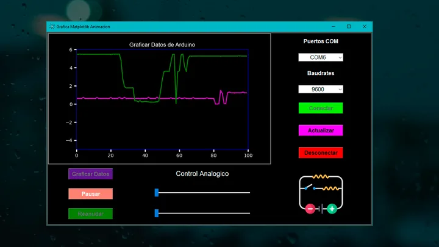

DiagramaDiagram
IIoTIIoT
Nodo IIoT ESP32 · MQTTESP32 · MQTT IIoT node
Telemetría de 4 variables y mando remoto por un único tópico MQTT.
Telemetry for 4 variables and remote control over a single MQTT topic.
ESP32MQTTFlet
Ingeniero Mecatrónico · Industria 4.0Mechatronics Engineer · Industry 4.0
Automatización industrial, sistemas SCADA e IIoT conectados con aplicaciones en Python, bases de datos y la nube.
Industrial automation, SCADA systems and IIoT connected to Python applications, databases and the cloud.
Telemetría de 4 variables y mando remoto por un único tópico MQTT.
Telemetry for 4 variables and remote control over a single MQTT topic.
Tendencias de 24 h con límites de operación y exportación a Excel.
24-hour trends with operating limits and Excel export.

CapturaScreenshotGráfica en tiempo real y control PWM por puerto serie.
Real-time plotting and PWM control over serial.
 CapturaScreenshot
CapturaScreenshotDashboard de escritorio con arquitectura modular por capas.
Desktop dashboard with a modular, layered architecture.
Tutoriales completos, con el código publicado, sobre interfaces en Python, comunicación con Arduino, apps móviles y bases de datos.
Complete tutorials, with published code, on Python interfaces, Arduino communication, mobile apps and databases.


Ingeniero mecatrónico con experiencia en automatización industrial, sistemas SCADA y programación aplicada a la ingeniería. Desarrollo soluciones para la Industria 4.0 con Python, IIoT, bases de datos y plataformas en la nube.
Mechatronics engineer with experience in industrial automation, SCADA systems and engineering-focused programming. I build Industry 4.0 solutions with Python, IIoT, databases and cloud platforms.
Participo en proyectos de automatización, integración de sistemas de control, programación de PLC y desarrollo de aplicaciones para monitoreo y gestión de datos.
I take part in automation projects, control system integration, PLC programming and the development of monitoring and data management applications.
En YouTube y GitHub comparto tutoriales y proyectos completos de Python, interfaces gráficas, Arduino, ESP32 y bases de datos, y exploro tecnologías como Firebase, Supabase, Google Cloud y SQL. Me motiva aprender de forma continua y aplicar la tecnología para optimizar procesos industriales.
On YouTube and GitHub I share tutorials and complete projects on Python, GUIs, Arduino, ESP32 and databases, while exploring technologies such as Firebase, Supabase, Google Cloud and SQL. I'm driven by continuous learning and by applying technology to optimize industrial processes.
PLC · control · integraciónPLC · control · integration
HMI · supervisión · monitoreoHMI · supervision · monitoring
ESP32 · MQTT · ArduinoESP32 · MQTT · Arduino
Flet · PyQt · Tkinter · KivyFlet · PyQt · Tkinter · Kivy
SQL · Firebase · Supabase · Google CloudSQL · Firebase · Supabase · Google Cloud
Piezas · ensamblesParts · assemblies
Oportunidades laborales, colaboraciones o un proyecto concreto: cuéntame qué equipo o datos están involucrados.
Job opportunities, collaborations or a specific project: tell me which equipment or data is involved.